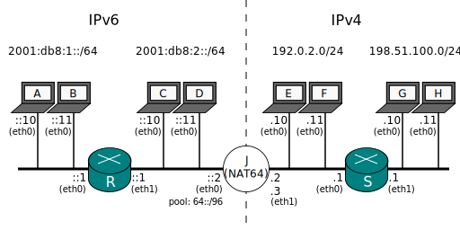

Documentación > Ejemplos de uso > NAT64 Stateful > Pool IPv4
Pool IPv4 Stateful

Aquí hay un paquete teorético que podría viajar desde C hasta E:
Origen: Dirección 2001:db8:2::10, puerto 1234 (aleatorio)
Destino: Dirección 64::192.0.2.10, puerto 80 (ej. intentando llegar a un sitio web)
Respecto al campo del puerto de origen: Es bien sabido que un puerto es un valor de dos bytes, lo que significa que se te pueden acabar. Esto no es normalmene un problema, ya que 65536 puertos por nodo es una cantidad bastante razonable.
El paquete de arriba podria ser traducido por J en algo como esto:
Origen: 192.0.2.2#1234
Destino: 192.0.2.10#80
Y Jool va a memorizar que 2001:db8:2::10#1234 tiene relación con 192.0.2.2#1234. E respondera
Origen: 192.0.2.10#80
Destino: 192.0.2.2#1234
Y por virtud de su memoria, Jool sabrá que tiene que traducir eso en
Origen: 64::192.0.2.10#80
Destino: 2001:db8:2::10#1234
Pero que sucede si D genera el siguiente paquete?
Origen: 2001:db8:2::11#1234
Destino: 64::192.0.2.10#80
Jool no puede traducirlo en
Source: 192.0.2.2#1234
Destination: 192.0.2.10#80
Por que entonces tendría dos mapeos contradictorios. Cual usara cuando la respuesta de E muestre su cara?
- 2001:db8:2::10#1234 <-> 192.0.2.2#1234
- 2001:db8:2::11#1234 <-> 192.0.2.2#1234
La solucion enmascarar no solo direcciones, sino puertos también. En lugar de generar el paquete mencionado anteriormente, Jool generara esto:
Origen: 192.0.2.2#6326
Destino: 192.0.2.10#80
Y el BIB lucirá como esto:
- 2001:db8:2::10#1234 <-> 192.0.2.2#1234
- 2001:db8:2::11#1234 <-> 192.0.2.2#6326
A lo que quiero llegar es, todos los nodos IPv6 comparten la misma dirección IPv4(a diferencia de SIIT). Esto es bueno por que no necesitas una dirección IPv4 por nodo IPv6, pero al mismo tiempo necesitas estar consciente de que Jool podria quedarse sin puertos.
C y D utilizaron un puerto cada uno (y resulto ser el mismo), pero Jool tuvo que utilzar 2 de todas maneras. Cada nodo IPv6 tiene 65536 puertos con los que puede trabajar, pero como todos comparten la misma dirección IPv4, como grupo, pueden utilizar hasta 65536 puertos mediante le traductor. Entre más nodos IPv6 tengas, J se quedará más rápido sin puertos.
Como encuentras una solución para esto?. Le puedes dar a Jool mas direcciones. Obtendrás 64k de puertos frescos por cada dirección IPv4 que ingreses. Si el lado IPv4 es de hecho proveedor de servicios de internet, recuerda que el será quien proporcionará las direcciones.
Puedes especificar hasta 5 direcciones durante la inserción del módulo:
user@J:~# modprobe jool pool4="192.0.2.2, 192.0.2.3, 192.0.2.4, 192.0.2.5, 192.0.2.6"
Si necesitas mas, las puedes agregar utilizando la aplicación de espacio de usuario:
user@J:~# jool --pool4 --add 192.0.2.7
user@J:~# jool --pool4 --add 192.0.2.8
user@J:~# # etc.
Puedes resumir muchas direcciones usaando el formato con prefijo. Lo siguiente ingresa direcciones desde 192.0.2.8 hasta 192.0.2.15:
user@J:~# modprobe pool4=192.0.2.8/28
or
user@J:~# jool --pool4 --add 192.0.2.8/28
Ten en cuenta que la implementacion de pool4 actual de Stateful Jool es lenta cuando se trata de agregar direcciones. Cada dirección tambien solicita mucha RAM (~0.5 MB son considerar los registros BIB, quizá más si la paginación no esta de tu lado).
Y recuerda que Linux quizá tenga que responder solicitudes ARP para ellas:
user@J:~# /sbin/ip address add 192.0.2.2/24 dev eth1
user@J:~# /sbin/ip address add 192.0.2.3/24 dev eth1
user@J:~# /sbin/ip address add 192.0.2.4/24 dev eth1
user@J:~# /sbin/ip address add 192.0.2.5/24 dev eth1
user@J:~# # etc.